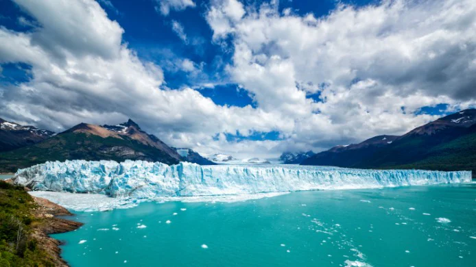
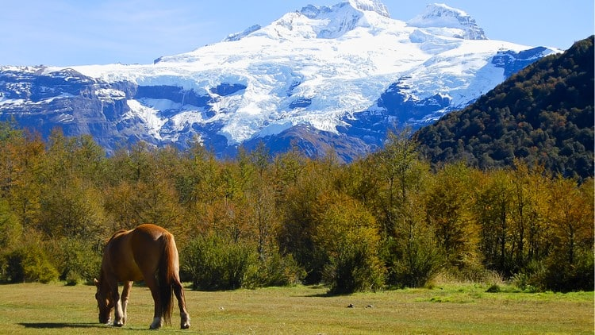
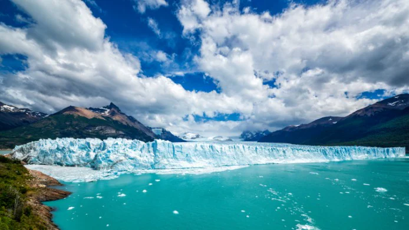
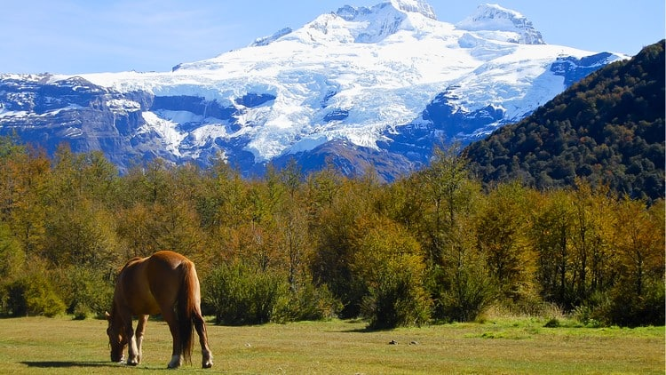

Capital:
La capital de Argentina es Buenos Aires.
Población:
Su población es de 46,23 millones.
Idioma:
La lengua oficial de Argentina es el español.
General:
Argentina es un país sudamericano de gran envergadura con un terreno que incluye las montañas de los
Andes, lagos glaciales y praderas en las Pampas, la tierra tradicional de pastoreo de su famoso ganado.
El país es conocido por el baile y la música del tango. Su gran capital cosmopolita, Buenos Aires, se
centra en la Plaza de Mayo, rodeada por imponentes edificios del siglo XIX, como la Casa Rosada, el
icónico palacio presidencial.
 




Sumérgete en la pasión argentina, donde el tango te seduce en las calles de Buenos Aires y la majestuosidad de la Patagonia te roba el aliento. Explora glaciares milenarios, cabalga por las pampas junto a gauchos y degusta los mejores vinos en Mendoza.
Desde la vibrante Buenos Aires hasta la indómita Patagonia, cada rincón de Argentina te invita a vivir una experiencia única. Piérdete en la inmensidad de sus paisajes, déjate seducir por la calidez de su gente y degusta los sabores auténticos de su gastronomía. ¡Argentina te espera con los brazos abiertos para crear recuerdos inolvidables!
Déjate envolver por la calidez de su gente, la riqueza de su cultura y la magnificencia de sus paisajes. ¡Argentina te espera con los brazos abiertos para vivir una experiencia única!
| # | Ciudad | Población Aproximada |
|---|---|---|
| 1 | Córdoba | 1,565,112 |
| 2 | Rosario | 1,376,276 |
| 3 | Mendoza | 937,154 |
| 4 | San Miguel de Tucumán | 799,024 |
| 5 | La Plata | 798,216 |
| 6 | Mar del Plata | 682,605 |
| 7 | Salta | 618,000 |
| 8 | Santa Fe | 545,000 |
| 9 | San Juan | 471,389 |
| 10 | Neuquén | 365,000 |